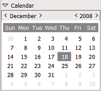

{application}

Table of contents
Introduction to {application}
You should read this first
| Topic | Details |
| Buttons, menus and views | Introduction to operating controls |
| The print preview panel | Print preview - how to |
| The calendar view panel | Events introduction |
{if actions_length} Actions and operations
Available actions and operations
| Topic | Details | |
| {actions.Name} {if actions.Comments} {actions.Comments} {endif} | {if actions.UserLevel} You need to be at least {actions.UserLevel} level user to perform this operation. {else} Any user can perform this operation. {endif} | |
{endif} {if base_length} Independent forms
Data that you can add it without opening a related form first
| Topic | Access | Access details | |
|
{base.Name} {if base.Description} {base.Description} {endif} |
{if base.Secured}
{else}
 {endif}
{if base.Owned}
{endif}
{if base.Owned}
 {endif}
{endif}
|
{if base.Add}
{if base.AddLevel}
Added only by level {base.AddLevel} users or higher.
{else}
Added directly by any user.
{endif}
{endif} {if base.Modify} {if base.ModifyLevel} {if base.ModifySame} Can be modified by level {base.ModifyLevel} users or higher. {else} Can be modified by the user that owns (added) it or by level {base.ModifyLevel} users or higher. {endif} {else} Can be modified by any user. {endif} {endif} {if base.Delete} {if base.DeleteLevel} {if base.DeleteSame} Can be deleted by level {base.DeleteLevel} users or higher. {else} Can be deleted by the user that owns (added) it or by level {base.DeleteLevel} users or higher. {endif} {else} Can be deleted by any user. {endif} {endif} {if base.List} {if base.ListLevel} {if base.ListSame} Can be listed/printed/reported by level {base.ListLevel} users or higher. {else} Can be listed/printed by the user that owns (added) it or by level {base.ListLevel} users or higher. {endif} {else} Can be listed (on screen or in reports) by any user {endif} {endif} {if base.Find} {if base.FindLevel} {if base.FindSame} Only level {base.FindLevel} users or higher can search this. {else} Only the user that owns (added) it or level {base.FindLevel} users or higher can search on this. {endif} {else} Any user can perform searches on this. {endif} {endif} read more ... |
|
{endif} {if linked_length} Related forms
Subforms of the independent forms
| Topic | Access | Access details | |
|
{linked.Name} {if linked.Description} {linked.Description} {endif} |
{if linked.Secured}
{else}
{endif}
{if linked.Owned}
{endif}
|
{if linked.Add}
{if linked.AddLevel}
Added only by level {linked.AddLevel} users or higher.
{else}
Added directly by any user.
{endif}
{endif} {if linked.Modify} {if linked.ModifyLevel} {if linked.ModifySame} Can be modified by level {linked.ModifyLevel} users or higher. {else} Can be modified by the user that owns (added) it or by level {linked.ModifyLevel} users or higher. {endif} {else} Can be modified by any user. {endif} {endif} {if linked.Delete} {if linked.DeleteLevel} {if linked.DeleteSame} Can be deleted by level {linked.DeleteLevel} users or higher. {else} Can be deleted by the user that owns (added) it or by level {linked.DeleteLevel} users or higher. {endif} {else} Can be deleted by any user. {endif} {endif} {if linked.List} {if linked.ListLevel} {if linked.ListSame} Can be listed/printed/reported by level {linked.ListLevel} users or higher. {else} Can be listed/printed by the user that owns (added) it or by level {linked.ListLevel} users or higher. {endif} {else} Can be listed (on screen or in reports) by any user {endif} {endif} {if linked.Find} {if linked.FindLevel} {if linked.FindSame} Only level {linked.FindLevel} users or higher can search this. {else} Only the user that owns (added) it or level {linked.FindLevel} users or higher can search on this. {endif} {else} Any user can perform searches on this. {endif} {endif} read more ... |
|
{endif} {if settings_length} Settings
General settings
| Topic | Access | Access details | |
|
{settings.Name} {if settings.Description} {settings.Description} {endif} |
{if settings.Secured}
{else}
{endif}
{if settings.Owned}
{endif}
|
{if settings.Add}
{if settings.AddLevel}
Added only by level {settings.AddLevel} users or higher.
{else}
Added directly by any user.
{endif}
{endif} {if settings.Modify} {if settings.ModifyLevel} {if settings.ModifySame} Can be modified by level {settings.ModifyLevel} users or higher. {else} Can be modified by the user that owns (added) it or by level {settings.ModifyLevel} users or higher. {endif} {else} Can be modified by any user. {endif} {endif} {if settings.Delete} {if settings.DeleteLevel} {if settings.DeleteSame} Can be deleted by level {settings.DeleteLevel} users or higher. {else} Can be deleted by the user that owns (added) it or by level {settings.DeleteLevel} users or higher. {endif} {else} Can be deleted by any user. {endif} {endif} {if settings.List} {if settings.ListLevel} {if settings.ListSame} Can be listed/printed/reported by level {settings.ListLevel} users or higher. {else} Can be listed/printed by the user that owns (added) it or by level {settings.ListLevel} users or higher. {endif} {else} Can be listed (on screen or in reports) by any user {endif} {endif} {if settings.Find} {if settings.FindLevel} {if settings.FindSame} Only level {settings.FindLevel} users or higher can search this. {else} Only the user that owns (added) it or level {settings.FindLevel} users or higher can search on this. {endif} {else} Any user can perform searches on this. {endif} {endif} read more ... |
|
{endif} {if reports_length} Advanced reports and statistics
Available advanced reports
| Topic | Details | |
| {reports.Name} {if reports.Comments} {reports.Comments} {endif} | {if reports.UserLevel} You need to be at least {reports.UserLevel} level user to generate this report. {else} Any user can generate this report. {endif} | |
{endif} {if calendar_length} Calendar view
What you see in the calendar
|  | In order to acces the calendar view you must double click on the desired day in the calendar control located in the main form (the one that appears after you log in). If the calendar is minimized you must expand it by clicking on the "Calendar" expander. When you click on a day, the whole week will be displayed, but only the selected day will be detailed. You can change the month or the year by clicking on the "<" and ">" arrows. |
| Event | Details | |
| {calendar.Name} {if calendar.Comments} {calendar.Comments} {endif} |
{if calendar.StartMember}
{if calendar.EndMember}
You can add/modify or delete from this calendar by using the {calendar.Entity.Name} form. On the calendar you will have "{calendar.DescriptionMember}" between "{calendar.StartMember}" and "{calendar.EndMember}". {else} You can add/modify or delete from this calendar by using the {calendar.Entity.Name} form. On the calendar you will have "{calendar.DescriptionMember}" on "{calendar.StartMember}". {endif} {else} You can add/modify or delete from this calendar by using the {calendar.Entity.Name} form. {endif} | |
{endif}